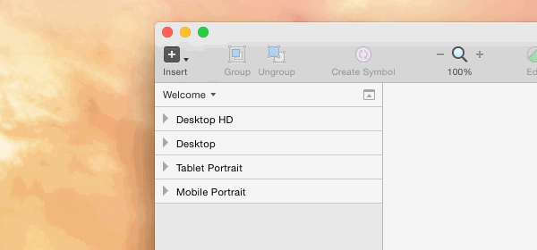
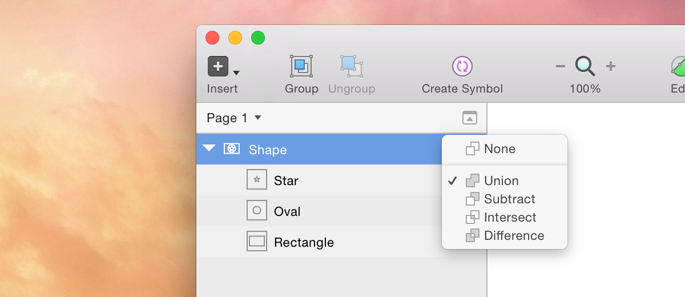

图层列表
The Layer List contains all layers on the current page. Here you can view each layer’s attributes, such as whether it’s hidden or locked, as well as being able to organize your document by renaming and reordering layers.
图层列表包含当前页面的所有图层。在这里你能够查看每个图层的属性，像是否隐藏或者锁定，而且能够通过重命名和重排图层来组织你的文档。
Multiple Pages
多页面
Sketch enables you to use multiple Pages in your designs and you can switch between them via the pop-up menu above the Layer List (you can also use the Function-Up Arrow / Function-Down Arrow shortcuts). The Layer List will display the layers of the current page only.
Sketch 支持在你的设计中使用多页面，并且你能够在图层列表之上使用弹出式的菜单来切换它们。（你也能使用 Function-Up箭头组合键或 Function-Down箭头组合键来切换它们。）图层列表仅仅显示当前页面的图层。

If you want to organize or move layers between pages, just reveal the Pages pane:
如果你想在页面间组织或删除图层，只要打开页面窗格。

Click the add button to insert a new Page. Control-click a Page to reveal a shortcut menu to duplicate or delete a Page:
点击加号按钮插入一个新页。按住 Ctrl 键，然后点击一个页面，会弹出一个快捷方式：复制或删除一页。

You can drag layers and Artboards from one Page to another, and can duplicate them by holding the Option key:
你可以在页面间拖动图层和画板，并且能通过按住 Option 键然后拖动，在页面间进行复制。

Artboards
画板
Artboards in the Layer List are displayed with a lighter color than other layers. These layers are at the top of the hierarchy, and cannot be contained within another Artboard.
画板以一种比其它图层更明亮的颜色显示。这些图层在层次结构的顶部，并且，画板之间不能相互包含。
Masks
遮罩
Layers that are masked will appear indented with a little arrow icon before their name and preview. These layers will clip to a layer below that is being used as a mask everything above it. Learn more about how to use masks.

Boolean Operations
Boolean operations are a set of rules used for combining simple shape layers, into a more complex one. One of these shape layers will have a disclosure triangle next to its preview which will reveal its subpaths, which can be edited and changed at any time. Each subpath will have a boolean operation applied to it, to dictate how it ought to display within the larger shape.
It can be a concept that’s a little tricky to initially understand, so you can find out more about boolean operations here.

Symbols and Shared Styles
Symbols are a group of layers that are intended to be re-used throughout your design. They can appear in the Layer List as instances of a master Symbol. These are flattened layers which can be double-clicked in the Canvas to edit their contents.
Shared Styles are used to keep layer styles consistent between multiple layers and they can be applied to both shape and text layers. To indicate that a shape or text layer is using a Shared Style, their preview is displayed in a purple color instead of the usual grey.

Hiding and Locking Layers
Any layer or group can be hidden from the Canvas, simply by clicking the eye icon that appears on hover—to the right of the layer name in the Layer List (or press Shift-Command-H). If this eye icon is visible, this indicates that the layer is hidden.
Similarly, when holding down the Option key and hovering the Layer List, a padlock icon will appear instead of the hide icon. When clicked, this will show that the layer is now locked on the Canvas, meaning it cannot be selected or moved without being unlocked first. Selected layers can also be locked by pressing Shift-Command-L.
Filtering Layers
At the bottom of the Layer List sits a bar with a text box and a couple of icons. These controls can be used to filter layers from appearing in the list. To find a certain layer by its name, simply search for it in the Filter text box and the Layer List will update to display your search results.
The two icons that appear next to the text box allow you to filter between regular layers, and slices. If you click on the Filter Layers button, your layers will be hidden from the list, and you won’t be able to interact with them on the Canvas. This is perfect for when you exclusively want to work with slice layers.
Clicking the Filter Slices button however will have the opposite effect: slices will be hidden from the Layer List and the Canvas to ensure they don’t get in your way. The number that appears next to the Filter Slices button indicates the total number of exportable layers (including slices) you have on a Page.
Note: If you find yourself not being able to select any layers on the Canvas, be sure to check the Filter Layers button is blue—indicating that they can be interacted with.